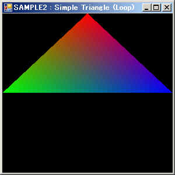
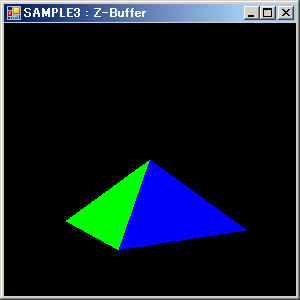
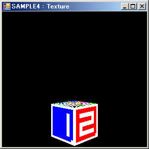
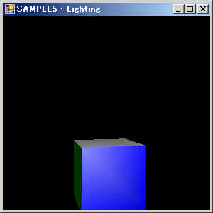

OpenGL関係(VB2005)
２．サンプルページ１（WGL）
ここではOpenGL用クラスライブラリを用いたサンプルプログラムを紹介します。
以下のサンプルはWGLを用いて表示しておりGLUTを使用していません。
よってGLUTをインストールしなくとも動作します。
サンプルのソースはDLLのソース内にあります。
◎サンプル１（三角形描画その１）
ウィンドウ内に三角形を描画するサンプルです。
OpenGL関係の初期化／終了処理にはヘルパクラスを使用しています。（それぞれ一行ですみます）
描画は、
①glClearでカラーバッファをクリア(消去)
②glBegin(GL_TRIANGLES)/glEnd()間で各頂点の色と座標を指定し三角形を描画
③バッファ切替で画面に表示
という流れになってます。
なおこのサンプルではフォームのPaintイベント時に三角形を描画しています。
Windows(Form)の標準的な描画方式に沿っているので構造が単純でCPU負荷も低くなります。
ただし動きのある表示などは向かないかもしれません。(タイマーとかで再描画させることになります）
◎サンプル２（三角形描画その２）
ウィンドウ内に三角形を描画するサンプルです。（見た目はサンプル１と同じです）

OpenGL関係の初期化／終了処理、及び、描画時の操作はサンプル１と同じです。
違いは描画のタイミングで、サンプル１ではPaintイベント時にのみ描画してましたが
このサンプルでは、メインプロシジャMainProc内のメインループをぐるぐる回し常に描画をし続けます。
CPU負荷は高くなりますが、アニメーションなどが容易になります。
ゲームなどは普通こちらの方式を使用するでしょう。
またフォームサイズが変更された場合、ビューポートの再設定を行ってます。
この為フォームサイズを変更したときの動作がサンプル１とは異なります。
それとESCキー入力で終了するようになっています。
◎サンプル３（Ｚバッファ）
ウィンドウ内に回転する四角すいを表示させるサンプルです。

基本構造はサンプル２と同じです。
Ｚバッファを有効にすることで面の描画順序に関係なく面の前後関係が正しく描画されるようになります。
（MainProc中のglEnable(GL_DEPTH_TEST)を削除した場合と比べるとよくわかるかも）
なおＺバッファを有効にするときは、描画時にクリアするときカラーバッファだけでなく
Ｚバッファもクリアする必要があります。（glClearの引数に注意）
またサンプル１／２は３Ｄでの描画ではありませんでしたが(描画時にＸＹのみ指定)、
このサンプルからは３Ｄでの描画(描画時にＸＹＺを指定)をするために
射影変換行列を指定しています。
射影変換行列とは３Ｄ空間(仮想空間)を２Ｄ空間(スクリーン)に射影するときに使用されるもの
と思ってください。（仮想空間での座標をスクリーン上の座標に変換するための行列）
このサンプルでは最も一般的と思われるパースペクティブ変換行列を使用しています。
視点位置(定数EYEX/EYEY/EYEZ)を変更すると見た目がかわることが確認できると思います。
それと四角すいを回転させるため、モデルビュー行列にY軸周りの回転行列を指定しています。
glBegin/glEnd内で指定する各頂点の座標は毎回同じですが、
モデルビュー行列の回転角度が異なりますので実際に見える角度が変わってきます。
３Ｄアプリでは通常このような方法で物体を回転/移動/縮尺させます。
各物体はオブジェクト内でローカルな座標で定義されており、
それをどの様な位置／サイズ／姿勢で描画させるかをモデルビュー行列で指定する訳です。
これによりアプリでは物体内の各頂点座標をいちいち計算する必要がなくなります。
◎サンプル４（テクスチャ）
ウィンドウ内に回転するテクスチャ付き立方体を表示するサンプルです。

組み込みリソースとしてプロジェクトに追加したBMPファイルをテクスチャイメージとして使ってます。
OpenGLではテクスチャを使用するとき下記の様にします。
①glGenTexturesでテクスチャ名(番号)を取得
②glBindTexture及びglTexImage2Dで取得したテクスチャ名にイメージを関連付ける。
③描画する前にglEnable(GL_TEXTURE_2D)でテクスチャを有効する。
④描画する(ポリゴンの各頂点を指定する)際、glTexCoord*でテクスチャ画像内の位置を指定する。
サンプルでは立方体をテクスチャのある面とない面で構成しています。
同じテクスチャであれば一つのglBegin/glEnd内で描画できますが、
テクスチャが違う場合はそれごとにglBegin/glEndで描画することになります。
◎サンプル５（ライティング）
ウィンドウ内に回転する立方体をライティングを用いて表示するサンプルです。

基本的な構造はサンプル４からテクスチャに関する部分を除いたものになります。
ライトによる効果を表現するには下記の操作が必要になります。
①マテリアルを設定する。
②ライティングを有効にする。
③ライトの位置を指定する。
④法線ベクトルを指定する。
マテリアルとはポリゴンの材質を意味します。
拡散光、鏡面光/係数、環境光等の属性を指定することで
金属的な材質やゴムのような材質などを表現できます。
各属性はglMaterialfvで指定します。
ライティングを有効にするには、
ライティング処理そのものを有効にするglEnable(GL_LIGHTING)と
ライトの０番を有効にするglEnable(GL_LIGHT0)を実行する必要があります。
ライトの位置はglLight*で指定します。
位置座標データのｗ成分を0以外にすると点光源、0にすると平行光源となります。
（このサンプルでは違いがよくわかりません。物体を複数置くと良くわかります。）
法線ベクトルはglNormal*で指定します。
頂点ごとに指定できますが、このサンプルでは面ごとに同じ法線ベクトルを指定しています。
（OpenGLでは基本的に一度指定した値は変更するまでずっと有効です。）
ライトの位置もモデルビュー行列の影響を受けます。
サンプルのようにglRotatef等でモデルビュー行列を
指定する前にライト位置を設定すると空間に固定な光源となり、
指定後(物体と同じモデルビュー行列)の場合物体に固定な光源となります。
（サンプルではDraw内のSetLightをglRotatefの前にするか後にするかで意味が違います）
上に戻る